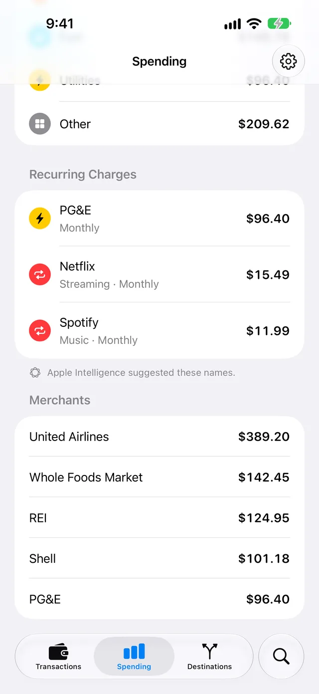
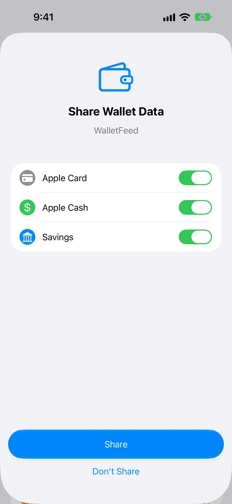

Find subscriptions on your Apple Card
WalletFeed finds the subscriptions and other recurring charges on your Apple Card and shows them on its Spending screen. It can also monitor these charges and send you a notification when a charge becomes a recurring charge or its price changes.
Before you start
- An iPhone with iOS 26 or a newer version. WalletFeed is available only in the US.
- WalletFeed, with access to your Wallet accounts. These accounts are Apple Card, Apple Cash and Savings.
- Charges from two or more months in Wallet. WalletFeed shows a charge that occurs each month only after its second charge.
- For short names and for Ask Spending, an iPhone that can use Apple Intelligence, with Apple Intelligence on.
WalletFeed Pro is not necessary for Recurring Charges or for Recurring Charge Alerts.
Step 1: Open Recurring Charges
-
On your iPhone, open WalletFeed.
-
Tap Spending.
-
Scroll down to Recurring Charges.

Each row shows a name, the price of the last charge, and Monthly or Weekly. With Apple Intelligence, the row also shows the type of service, for example Streaming · Monthly.
The list starts with the charge that has the largest total for one month. If WalletFeed finds no recurring charges, the Recurring Charges section does not show. For more information, refer to Recurring Charges.
Step 2: See the total for one month
Ask Spending calculates the total of your recurring charges for one month. For this step, Apple Intelligence must be on. Without it, the Spending screen does not show Ask about your spending. To set Apple Intelligence to on, refer to Ask Spending.
-
On the Spending screen, tap Ask about your spending.

-
Type
Subscriptions I pay for. -
Tap Go on the keyboard.
Ask Spending shows the number of recurring charges and their total for one month. Below the chart, Recurring Charges shows the price of each charge for one month.
-
To see the full Spending screen again, tap Clear (the x button) in the field.
To get the price for one month of a charge that occurs each week, WalletFeed multiplies the price by approximately 4.3. The total also includes charges that are not subscriptions, for example a charge for electricity each month.
If you also type a period of time, for example last month, Ask Spending shows the total of these charges in that period.
Step 3: Get a notification when a charge starts or changes
-
Tap Settings (the gear button) at the top of the screen.
-
In the Notifications section, set the Recurring Charge Alerts switch to on.

-
If iOS shows a message about notifications, let WalletFeed send them.
-
Tap Done.
When a charge becomes a recurring charge, the notification shows, for example, “Netflix repeats monthly” and “$15.49 each month”.
If the price of a recurring charge changes by more than 2%, the notification shows, for example, “Netflix costs more” and “$17.99, up from $15.49”.
WalletFeed sends only one notification for each charge, and only for charges from the last 7 days. It sends no notifications for the charges that were in Wallet before you set the Recurring Charge Alerts switch to on.
When you open WalletFeed, it examines your transactions and sends the new notifications. When WalletFeed is closed, iOS starts WalletFeed in approximately 1 hour or less after a change in Wallet.
Conditions for a recurring charge
WalletFeed examines your transactions from this month and from the two months before it. It shows the charges from a merchant in Recurring Charges when they agree with these conditions:
- All the charges have the same merchant name. For example, “Netflix.com” and “NETFLIX.COM” are the same merchant name.
- The difference between the price of each charge and the price of the last charge is 15% or less.
- For Monthly, there are two or more charges, and each charge is 26 to 35 days after the charge before it.
- For Weekly, there are three or more charges, and each charge is 6 to 8 days after the charge before it.
These transactions do not show in Recurring Charges:
- Apple Card Monthly Installments. They show in Monthly Installments on the same screen.
- Refunds, transfers, bill payments and rejected transactions
- Charges that occur each year. WalletFeed finds only charges that occur each month or each week.
Some recurring charges are not subscriptions. Recurring Charges also shows these charges.
Names from Apple Intelligence
With Apple Intelligence, WalletFeed shows a short name and a type of service. For example, for the merchant name “NETFLIX.COM 866-579” from Wallet, WalletFeed shows Netflix and Streaming. If the first word of the name from Apple Intelligence is not in the merchant name, WalletFeed does not use that name. WalletFeed gets names only for the first 12 charges in the list. Below the list, WalletFeed also shows Apple Intelligence suggested these names.
Apple Intelligence gets only the merchant names. It operates on your iPhone. WalletFeed does not send data to a server for these names.
Without Apple Intelligence, each row shows the merchant name from Wallet, and Monthly or Weekly.
Stop the notifications
- In WalletFeed, tap Settings (the gear button) at the top of the screen.
- In the Notifications section, set the Recurring Charge Alerts switch to off.
- Tap Done.
A notification shows the name of the charge and its prices. Notification Center keeps the notification until you remove it. When notification previews are off, iOS does not show the text on the Lock Screen.
If something goes wrong
If Spending shows “No Cards”
WalletFeed does not have access to your Wallet accounts.
-
Tap Choose Accounts.
-
Make sure that the Apple Card switch is on.

-
Tap Share.
If WalletFeed shows Wallet Access Off, refer to Wallet accounts.
If Spending shows “Couldn't Read Wallet”
WalletFeed did not get your transactions from Wallet.
To try again, pull down on the Spending screen.
If a new subscription is not in Recurring Charges
WalletFeed shows a charge that occurs each month only after its second charge. It shows a charge that occurs each week only after its third charge.
- Wait for the next charge from the merchant.
- Open Spending again.
If a subscription with a new price is not in Recurring Charges
If the price changes by more than 15%, WalletFeed does not show the charge. It shows the charge again when all its charges in this month and the two months before it have the new price.
Recurring Charge Alerts can send a notification for this type of change. To get these notifications:
- In WalletFeed, tap Settings (the gear button) at the top of the screen.
- In the Notifications section, set the Recurring Charge Alerts switch to on.
If a subscription with a charge each year is not in Recurring Charges
WalletFeed finds only charges that occur each month or each week.
To find the charges from the merchant:
- Tap Search at the bottom of the screen.
- Type the name of the merchant.
If a charge shows the merchant name from Wallet
The cause is one of these:
- Apple Intelligence is off.
- Apple Intelligence gave no name that agrees with the merchant name.
- The charge is not in the first 12 charges of the list.
If Apple Intelligence is off, do these steps:
-
Make sure that your iPhone can use Apple Intelligence.
Apple gives the list of iPhone models in How to get Apple Intelligence.
-
In the Settings app, tap Apple Intelligence & Siri.
-
Set Apple Intelligence to on.
-
In WalletFeed, open Spending again.
If Recurring Charge Alerts does not stay on
iOS does not let WalletFeed send notifications.
- On your iPhone, open the Settings app.
- Tap Notifications › WalletFeed.
- Set Allow Notifications to on.
- Open WalletFeed.
- Tap Settings (the gear button) at the top of the screen.
- In the Notifications section, set the Recurring Charge Alerts switch to on.
If you do not get a notification
WalletFeed sends a notification only for a new recurring charge or a price change of more than 2%. It sends notifications only for charges from the last 7 days.
- Open WalletFeed.
- Tap Settings (the gear button) at the top of the screen.
- Make sure that the Recurring Charge Alerts switch is on.
Related
Updated October 30, 2026